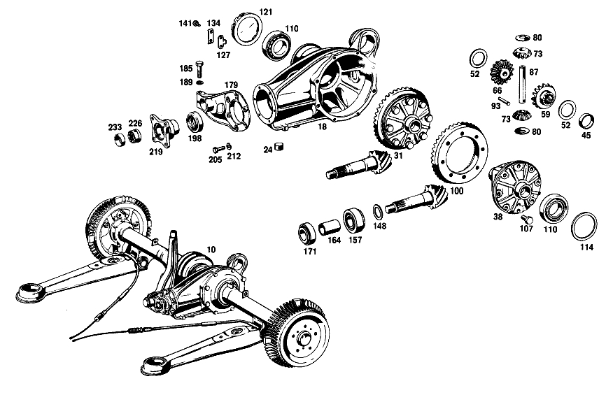

| № | Артикул | Название | Кол. | Примечание | Ограничение |
|---|---|---|---|---|---|
| 18 | A 110 350 02 20 | КАРТЕР МОСТА | 1 | [019] FROM REAR AXLE 003797,FROM CHASSIS 028345 | |
| 24 | A 186 997 00 32 | - ЗАГЛУШКА РЕЗЬБОВАЯ | 2 | ЗАПРАВКА МАСЛА И СЛИВ МАСЛА; M24X1,5 | |
| 31 | A 111 350 09 23 | Дифференциал | 1 | БЕЗ КОМПЛЕКТА ШЕСТЕРЕН | |
| 38 | A 110 353 01 01 | КОРПУС ДИФФЕРЕНЦИАЛА | - | ||
| 45 | A 110 353 00 48 | КОЛЬЦО | 1 | ||
| 52 | A 115 353 11 62 | - Упорная шайба | 2 | ПО НЕОБХОДИМОСТИ 1.3 MM; 1.30 MM | |
| 59 | A 110 353 02 15 | - ШЕСТЕРНЯ ПОЛУОСИ | 1 | СЛЕВА | |
| 66 | A 110 350 01 40 | - ВЕДУЩ.КОН.ШЕСТЕРНЯ | 1 | СПРАВА | |
| 73 | A 110 353 02 14 | - ВЕДУЩ.КОН.ШЕСТЕРНЯ | 2 | ||
| 80 | A 180 353 00 24 | - СФЕРИЧЕСКАЯ ШАЙБА | 2 | КОНИЧЕСКИЙ САТЕЛЛИТ ДИФФЕРЕНЦИАЛА | |
| 87 | A 180 353 00 21 | - БОЛТ | 1 | КОНИЧЕСКИЙ САТЕЛЛИТ ДИФФЕРЕНЦИАЛА | |
| 93 | A 136 353 02 74 | - БОЛТ | 1 | ||
| 100 | A 111 350 07 39 | РЯД ШЕСТЕРЕН | 1 | 1:4.08 [039] NOT INCLUDED IN RANGE OF DELIVERY OF 111 350 09 23 | |
| 100 | A 111 350 05 39 | РЯД ШЕСТЕРЕН | 1 | RATIO 1:4.56,USE с 6.50\-15 TIRES [039] NOT INCLUDED IN RANGE OF DELIVERY OF 111 350 09 23 | |
| 107 | A 128 990 00 01 | болт | 8 | [039] NOT INCLUDED IN RANGE OF DELIVERY OF 111 350 09 23 | |
| 110 | N 000720 030208 | Роликовый подшипник | 2 | ||
| 114 | A 128 353 00 52 | РАСПОРНАЯ ШАЙБА | 1 | ПО НЕОБХОДИМОСТИ 1.8mm | |
| 121 | A 110 353 01 25 | КОЛЬЦО РЕЗЬБОВОЕ | 1 | ||
| 127 | A 180 353 01 73 | ПРЕДОХРАНИТЕЛЬ | 1 | ПО НЕОБХОДИМОСТИ | |
| 134 | A 180 994 00 30 | Стопорная шайба | 1 | ||
| 141 | N 000933 006103 | Винт | - | ||
| 141 | N 304017 006018 | Винт с 6-гранной головкой | 2 | M6X12 | |
| 148 | A 128 353 05 52 | РАСПОРНАЯ ШАЙБА | 1 | ПО НЕОБХОДИМОСТИ 0.80 MM | |
| 157 | A 000 980 10 02 | Конический подшипник | 1 | ||
| 164 | A 110 353 02 42 | ДИСТАНЦ. ВТУЛКА | 1 | ||
| 171 | A 000 980 01 02 | КОНИЧ. РОЛИКОПОДШИПНИК | 1 | ||
| 171 | A 000 980 03 02 | КОНИЧ. РОЛИКОПОДШИПНИК | 1 | ||
| 171 | A 000 980 11 02 | КОНИЧ. РОЛИКОПОДШИПНИК | 1 | ||
| 179 | A 110 353 03 08 | КРЫШКА | 1 | [023] 021,023 FROM REAR AXLE 006262 [021] 014 FROM REAR AXLE 022910 | |
| 185 | N 070613 010000 | Винт | 1 | [023] 021,023 FROM REAR AXLE 006262 [021] 014 FROM REAR AXLE 022910 | |
| 189 | N 000127 010200 | Пружинное кольцо | 1 | [023] 021,023 FROM REAR AXLE 006262 [021] 014 FROM REAR AXLE 022910 | |
| 198 | A 004 997 56 46 | Уплотнительное кольцо | 1 | ||
| 198 | A 005 997 41 46 | УПЛОТНИТ. КОЛЬЦО | 1 | ||
| 205 | N 070614 008002 | БОЛТ | 6 | КРЫШКА НА КОРПУСЕ ЗАДН.МОСТА | |
| 212 | N 000127 008200 | КОЛЬЦО ПРУЖИННОЕ | 6 | КРЫШКА НА КОРПУСЕ ЗАДН.МОСТА | |
| 219 | A 110 350 01 45 | Фланец | 1 | ПРИВОДН. КОНИЧ. ШЕСТЕРНЯ | |
| 226 | A 111 350 01 66 | Шлицевая гайка | 1 | ПРИВОДН. КОНИЧ. ШЕСТЕРНЯ | |
| 233 | A 111 994 02 44 | - предохранитель | 1 | [040] 014 UP TO REAR AXLE 135874,021,023 UP TO REAR AXLE 015491 | |
| 240 | A 110 350 12 19 | ТРУБА НЕСУЩАЯ | 1 | СЛЕВА | |
| 247 | A 110 350 13 19 | ТРУБА НЕСУЩАЯ | 1 | СПРАВА | |
| 254 | A 180 351 01 50 | - втулка | 2 | ||
| 261 | A 115 350 02 90 | Воздушный клапан | 1 | НЕСУЩ. ТРУБА СЛЕВА | |
| 270 | A 110 350 02 13 | ШАРНИР ШАРОВОЙ | - | ||
| 275 | A 180 357 01 52 | - Диск | 1 | ||
| 281 | A 000 994 29 41 | - Стопорное кольцо | 1 | ||
| 288 | A 111 350 01 13 | - ШАРНИР ШАРОВОЙ | 1 | ||
| 295 | N 000471 032000 | - Стопорное кольцо | 2 | ||
| 301 | A 180 981 00 86 | - Ролик | 108 | ||
| 308 | A 188 357 00 52 | - Диск | 1 | ||
| 315 | A 094 990 71 05 | - Стопорное кольцо | 1 | ||
| 322 | A 112 350 00 28 | - ШАРНИР КАРДАННЫЙ | - | [025] 014 FROM REAR AXLE 100942 [027] 021,023 FROM REAR AXLE 012683 | |
| 329 | A 186 994 12 35 | - Пруж. стопорное кольцо | 4 | ПО НЕОБХОДИМОСТИ 2.15 MM [025] 014 FROM REAR AXLE 100942 [027] 021,023 FROM REAR AXLE 012683 | |
| 336 | A 110 997 00 32 | ЗАГЛУШКА РЕЗЬБОВАЯ | 1 | [402] БОЛЬШЕ НЕ ПОСТАВЛЯЕТСЯ | |
| 343 | N 000127 010200 | Пружинное кольцо | 1 | ||
| 350 | A 180 353 30 52 | РАСПОРНАЯ ШАЙБА | 1 | ПО НЕОБХОДИМОСТИ 1.0 MM | |
| 359 | A 110 357 04 91 | Манжета | 1 | ||
| 366 | A 110 357 03 91 | Манжета | 1 | РАЗДЕЛЬН. | |
| 373 | A 002 988 10 78 | Скоба | 9 | ||
| 380 | A 110 357 11 01 | ВАЛ ЗАДНЕГО МОСТА | 1 | СЛЕВА [030] 014 FROM REAR AXLE 057090 [032] 021,023 FROM REAR AXLE 009626 | |
| 387 | A 110 357 12 01 | ВАЛ ЗАДНЕГО МОСТА | 1 | СПРАВА [030] 014 FROM REAR AXLE 057090 [032] 021,023 FROM REAR AXLE 009626 [042] 014 UP TO REAR AXLE 139804,021,023 UP TO REAR AXLE 015749 | |
| 395 | A 002 981 23 01 | ПОДШ. С ЦИЛ. РОЛИКАМИ | 1 | СЛЕВА | |
| 402 | A 183 353 03 73 | предохранитель | 2 | ||
| 408 | A 153 357 00 26 | Шлицевая гайка | 2 | ||
| 415 | N 000933 010164 | Винт | 4 | НЕСУЩАЯ ТРУБА НА КОРПУСЕ МОСТА | |
| 422 | N 000933 008154 | Винт | - | ||
| 422 | N 304017 008021 | Винт с 6-гранной головкой | 4 | НЕСУЩАЯ ТРУБА НА КОРПУСЕ МОСТА; M8X20 | |
| 430 | A 180 421 08 01 | ТОРМОЗНОЙ БАРАБАН | 2 | ||
| 437 | A 110 351 00 74 | Палец | 1 | [023] 021,023 FROM REAR AXLE 006262 [021] 014 FROM REAR AXLE 022910 | |
| 444 | A 180 351 01 53 | Проставочная втулка | 2 | ПО НЕОБХОДИМОСТИ 26.0 MM | |
| 451 | A 180 351 14 52 | Компенсационная шайба | 2 | 2.0 MM | |
| 458 | A 180 351 13 52 | Центрирующее кольцо | - | ||
| 458 | A 180 351 14 52 | Компенсационная шайба | 2 | ПО НЕОБХОДИМОСТИ 1.9 MM | |
| 465 | A 180 351 03 51 | Проставочное кольцо | 2 | ||
| 472 | A 180 351 09 86 | Резиновое кольцо | 4 | ||
| 479 | A 180 351 00 74 | Клин | 1 | ||
| 487 | N 000127 008200 | КОЛЬЦО ПРУЖИННОЕ | 1 | ||
| 494 | N 000934 008010 | Гайка | - | ||
| 494 | N 304032 008006 | Шестигранная гайка | 1 | M8 | |
| 501 | A 180 994 03 41 | Стопорное кольцо | 1 | ||
| 508 | N 000443 020000 | Запорная крышка | 1 | ||
| 516 | A 180 997 04 30 | Резьбовая пробка | 1 | ||
| 523 | A 180 994 01 12 | Стопорная шайба | 1 | ||
| 529 | N 071412 006100 | Пресс-масленка | 1 | [402] БОЛЬШЕ НЕ ПОСТАВЛЯЕТСЯ | |
| 536 | N 071412 006200 | Пресс-масленка | 1 | ||
| 543 | A 110 350 12 75 | Резиновая опора | 1 | [023] 021,023 FROM REAR AXLE 006262 [021] 014 FROM REAR AXLE 022910 | |
| 550 | A 100 350 00 32 | КРОНШТЕЙН | 1 | ||
| 557 | N 001473 003001 | - Просечной штифт | 1 | ||
| 565 | N 070614 010018 | Винт | 2 | ||
| 572 | N 000127 010200 | Пружинное кольцо | 2 | ||
| 579 | A 110 350 10 29 | НИЖН. ПРОДОЛЬН. ШТАНГА | 1 | ||
| 585 | A 110 352 18 65 | Резиновая опора | 4 | ||
| 591 | A 111 352 05 09 | Опорный палец | 2 | ||
| 598 | A 111 352 12 76 | Пружинная шайба | 4 | ||
| 605 | N 009045 032000 | Пруж. стопорное кольцо | 4 | ||
| 611 | A 110 352 01 51 | Проставочное кольцо | 4 | ||
| 617 | A 111 352 01 71 | болт | 4 | ||
| 624 | A 111 352 01 73 | Стопорная шайба | 4 | ||
| 631 | A 110 350 06 75 | Резиновая опора | 1 | ||
| 637 | A 111 350 05 67 | ШАЙБА УПОРНАЯ | 1 | СВЕРХУ | |
| 644 | N 000961 016004 | Винт | 1 | ||
| 651 | N 000127 016200 | Пружинное кольцо | 1 | ||
| 658 | N 000933 010128 | Винт | 4 | ||
| 664 | N 000127 010200 | Пружинное кольцо | 4 | ||
| 671 | A 110 350 04 93 | Поперечная распорка | 1 | ||
| 677 | N 000934 014019 | Гайка | - | ||
| 677 | N 308673 014001 | Шестигранная гайка | 1 | M14X1.5 | |
| 683 | A 111 351 03 40 | ДЕРЖАТЕЛЬ | 1 | ||
| 690 | A 111 351 04 48 | Резиновая опора | 2 | ||
| 696 | A 111 351 02 40 | Язычок | 1 | ||
| 703 | N 000933 010238 | Винт | - | ||
| 703 | N 304017 010028 | Винт с 6-гранной головкой | 1 | M10X20\-8.8 | |
| 710 | N 000137 010201 | Пружинная шайба | 1 | ||
| 717 | N 000960 012163 | БОЛТ | 1 | ||
| 723 | N 000137 012203 | Пружинная шайба | - | ||
| 723 | A 094 990 42 05 | Пружинная шайба | 1 | ||
| 730 | A 110 351 07 43 | Чашка | 1 | ВНУТР. | |
| 737 | A 111 351 04 44 | Резиновое кольцо | 2 | ||
| 745 | A 110 351 06 43 | Чашка | 1 | СНАРУЖИ | |
| 749 | N 000934 012023 | Гайка | - | ||
| 749 | N 308673 012002 | Шестигранная гайка | 1 | ||
| 753 | N 007967 012000 | Гайка | 1 | ||
| 760 | A 110 352 10 65 | Резиновая опора | 2 | ||
| 767 | A 110 352 00 42 | Крепежная пластина | 2 | ||
| 774 | A 108 990 03 40 | Диск | 2 | MOUNTING PLATE TO BODY FLOOR | |
| 781 | N 000127 008203 | Пружинное кольцо | 6 | MOUNTING PLATE TO BODY FLOOR | |
| 788 | N 000934 008010 | Гайка | - | ||
| 788 | N 304032 008006 | Шестигранная гайка | 6 | MOUNTING PLATE TO BODY FLOOR; M8 | |
| 795 | N 912004 014100 | Пружинное кольцо | 2 | ПЕРЕБОРКА НА ПОЛУ КАБИНЫ [036] FROM CHASSIS 024229 | |
| 803 | N 308673 014001 | Шестигранная гайка | 2 | ПЕРЕБОРКА НА ПОЛУ КАБИНЫ; M14X1.5 [036] FROM CHASSIS 024229 | |
| A 111 350 11 00 | ЗАДНИЙ МОСТ | - | [038] UP TO CHASSIS 049939 | ||
| A 111 350 16 00 | ЗАДНИЙ МОСТ | - | [038] UP TO CHASSIS 049939 | ||
| A 111 350 20 00 | ЗАДНИЙ МОСТ | - | |||
| A 110 350 02 03 | КАРТЕР МОСТА | - | ПЕРЕДАТОЧНОЕ ОТНОШЕНИЕ: 1:4.08 [412] БОЛЬШЕ НЕ ПОСТАВЛЯЕТСЯ, ЗАКАЗЫВАТЬ ОТДЕЛЬНЫЕ ДЕТАЛИ [697] ДЕТАЛЬ ПОСТАВЛЯЕТСЯ ТОЛЬКО/ИЛИ ТАКЖЕ КАК ЗАП.ЧАСТЬ | ||
| A 110 350 05 00 | ЗАДНИЙ МОСТ | - | |||
| A 110 350 02 03 | КАРТЕР МОСТА | 1 | [412] БОЛЬШЕ НЕ ПОСТАВЛЯЕТСЯ, ЗАКАЗЫВАТЬ ОТДЕЛЬНЫЕ ДЕТАЛИ [697] ДЕТАЛЬ ПОСТАВЛЯЕТСЯ ТОЛЬКО/ИЛИ ТАКЖЕ КАК ЗАП.ЧАСТЬ | ||
| A 110 350 02 03 | КАРТЕР МОСТА | 1 | ПЕРЕДАТОЧНОЕ ОТНОШЕНИЕ: 1:4.08 [412] БОЛЬШЕ НЕ ПОСТАВЛЯЕТСЯ, ЗАКАЗЫВАТЬ ОТДЕЛЬНЫЕ ДЕТАЛИ [697] ДЕТАЛЬ ПОСТАВЛЯЕТСЯ ТОЛЬКО/ИЛИ ТАКЖЕ КАК ЗАП.ЧАСТЬ | ||
| A 110 350 01 20 | КАРТЕР МОСТА | - | [018] UP TO REAR AXLE 003796,UP TO CHASSIS 028345 | ||
| A 180 353 05 01 | - КОРПУС ДИФФЕРЕНЦИАЛА | - | |||
| A 180 353 11 62 | - ШАЙБА УПОРНАЯ | - | |||
| A 115 353 10 62 | - Упорная шайба | 2 | ПО НЕОБХОДИМОСТИ; 1.40 MM | ||
| A 180 353 12 62 | - ШАЙБА УПОРНАЯ | - | |||
| A 115 353 09 62 | - Упорная шайба | 2 | ПО НЕОБХОДИМОСТИ 1.5mm; 1.50 MM | ||
| A 180 353 13 62 | - ШАЙБА УПОРНАЯ | - | |||
| A 115 353 08 62 | - Упорная шайба | 2 | ПО НЕОБХОДИМОСТИ 1.6mm; 1.60 MM | ||
| A 115 353 07 62 | - ШАЙБА УПОРНАЯ | 2 | ПО НЕОБХОДИМОСТИ 1.7 MM; 1.70 MM [402] БОЛЬШЕ НЕ ПОСТАВЛЯЕТСЯ | ||
| A 108 586 01 35 | ремкомплект | 1 | ПРИВОДН. КОНИЧ. ШЕСТЕРНЯ | ||
| A 128 353 01 52 | РАСПОРНАЯ ШАЙБА | 1 | ПО НЕОБХОДИМОСТИ 1.9 MM | ||
| A 128 353 02 52 | РАСПОРНАЯ ШАЙБА | 1 | ПО НЕОБХОДИМОСТИ 2.0 MM | ||
| A 128 353 03 52 | РАСПОРНАЯ ШАЙБА | 1 | ПО НЕОБХОДИМОСТИ 2.1 MM | ||
| A 128 353 04 52 | РАСПОРНАЯ ШАЙБА | 1 | ПО НЕОБХОДИМОСТИ 2.2 MM | ||
| A 180 353 02 73 | ПРЕДОХРАНИТЕЛЬ | 1 | ПО НЕОБХОДИМОСТИ | ||
| A 180 353 03 73 | ПРЕДОХРАНИТЕЛЬ | 1 | ПО НЕОБХОДИМОСТИ | ||
| A 180 353 05 73 | предохранитель | 1 | ПО НЕОБХОДИМОСТИ | ||
| A 180 353 06 73 | ПРЕДОХРАНИТЕЛЬ | 1 | ПО НЕОБХОДИМОСТИ | ||
| A 128 353 07 52 | РАСПОРНАЯ ШАЙБА | 1 | ПО НЕОБХОДИМОСТИ 0.90 MM | ||
| A 128 353 09 52 | РАСПОРНАЯ ШАЙБА | 1 | ПО НЕОБХОДИМОСТИ 1.00 MM | ||
| A 128 353 11 52 | РАСПОРНАЯ ШАЙБА | 1 | ПО НЕОБХОДИМОСТИ 1.10 MM | ||
| A 128 353 13 52 | РАСПОРНАЯ ШАЙБА | 1 | ПО НЕОБХОДИМОСТИ 1.20 MM | ||
| A 128 353 15 52 | РАСПОРНАЯ ШАЙБА | 1 | ПО НЕОБХОДИМОСТИ 1.30 MM | ||
| A 128 353 17 52 | РАСПОРНАЯ ШАЙБА | 1 | ПО НЕОБХОДИМОСТИ 1.40 MM | ||
| A 128 353 19 52 | РАСПОРНАЯ ШАЙБА | 1 | ПО НЕОБХОДИМОСТИ 1.50 MM | ||
| A 110 353 02 08 | КРЫШКА | 1 | [019] FROM REAR AXLE 003797,FROM CHASSIS 028345 | ||
| A 110 320 24 43 | Держатель | 1 | АМОРТИЗАТОР СЛЕВА | ||
| A 110 320 25 43 | ДЕРЖАТЕЛЬ | 1 | АМОРТИЗАТОР СПРАВА [402] БОЛЬШЕ НЕ ПОСТАВЛЯЕТСЯ | ||
| A 110 350 04 13 | ШАРНИР ШАРОВОЙ | 1 | |||
| A 111 350 00 28 | - ШАРНИР КАРДАННЫЙ | 4 | [024] 014 UP TO REAR AXLE 100941 [026] 021,023 UP TO REAR AXLE 012682 | ||
| A 112 350 01 28 | - Карданный шарнир | 4 | |||
| A 120 994 01 35 | - СТОПОРН. КОЛЬЦО | 4 | ПО НЕОБХОДИМОСТИ 2.25 MM [024] 014 UP TO REAR AXLE 100941 [026] 021,023 UP TO REAR AXLE 012682 | ||
| A 120 994 04 35 | - СТОПОРН. КОЛЬЦО | 4 | ПО НЕОБХОДИМОСТИ 2.35 MM [024] 014 UP TO REAR AXLE 100941 [026] 021,023 UP TO REAR AXLE 012682 | ||
| A 120 994 06 35 | - СТОПОРН. КОЛЬЦО | 4 | ПО НЕОБХОДИМОСТИ 2.40 MM [024] 014 UP TO REAR AXLE 100941 [026] 021,023 UP TO REAR AXLE 012682 | ||
| A 120 994 07 35 | - СТОПОРН. КОЛЬЦО | 4 | ПО НЕОБХОДИМОСТИ 2.45 MM [024] 014 UP TO REAR AXLE 100941 [026] 021,023 UP TO REAR AXLE 012682 | ||
| A 120 994 08 35 | - СТОПОРН. КОЛЬЦО | 4 | ПО НЕОБХОДИМОСТИ 2.55 MM [024] 014 UP TO REAR AXLE 100941 [026] 021,023 UP TO REAR AXLE 012682 | ||
| A 186 994 04 35 | - СТОПОРН. КОЛЬЦО | 4 | ПО НЕОБХОДИМОСТИ 2.25 MM [025] 014 FROM REAR AXLE 100942 [027] 021,023 FROM REAR AXLE 012683 | ||
| A 186 994 15 35 | - СТОПОРН. КОЛЬЦО | 4 | ПО НЕОБХОДИМОСТИ 2.35 MM [025] 014 FROM REAR AXLE 100942 [027] 021,023 FROM REAR AXLE 012683 | ||
| A 186 994 17 35 | - СТОПОРН. КОЛЬЦО | 4 | ПО НЕОБХОДИМОСТИ 2.45 MM [025] 014 FROM REAR AXLE 100942 [027] 021,023 FROM REAR AXLE 012683 | ||
| A 186 994 19 35 | - СТОПОРН. КОЛЬЦО | 4 | ПО НЕОБХОДИМОСТИ 2.55 MM [025] 014 FROM REAR AXLE 100942 [027] 021,023 FROM REAR AXLE 012683 | ||
| A 180 353 31 52 | РАСПОРНАЯ ШАЙБА | 1 | ПО НЕОБХОДИМОСТИ 1.1 MM | ||
| A 180 353 33 52 | РАСПОРНАЯ ШАЙБА | 1 | ПО НЕОБХОДИМОСТИ 1.2 MM | ||
| A 180 353 35 52 | РАСПОРНАЯ ШАЙБА | 1 | ПО НЕОБХОДИМОСТИ 1.3 MM | ||
| A 180 353 37 52 | РАСПОРНАЯ ШАЙБА | 1 | ПО НЕОБХОДИМОСТИ 1.4 MM | ||
| A 180 353 39 52 | РАСПОРНАЯ ШАЙБА | 1 | ПО НЕОБХОДИМОСТИ 1.5mm | ||
| A 180 353 41 52 | РАСПОРНАЯ ШАЙБА | 1 | ПО НЕОБХОДИМОСТИ 1.6mm | ||
| A 180 353 43 52 | РАСПОРНАЯ ШАЙБА | 1 | ПО НЕОБХОДИМОСТИ 1.7 MM | ||
| A 180 353 45 52 | РАСПОРНАЯ ШАЙБА | 1 | ПО НЕОБХОДИМОСТИ 1.8mm | ||
| A 180 353 47 52 | РАСПОРНАЯ ШАЙБА | 1 | ПО НЕОБХОДИМОСТИ 1.9 MM | ||
| A 180 353 49 52 | РАСПОРНАЯ ШАЙБА | 1 | ПО НЕОБХОДИМОСТИ 2.0 MM | ||
| A 110 350 05 10 | ПОЛУОСЬ | - | [029] 014 UP TO REAR AXLE 057089 [031] 021,023 UP TO REAR AXLE 009625 | ||
| A 110 350 07 10 | ПОЛУОСЬ | - | [029] 014 UP TO REAR AXLE 057089 [031] 021,023 UP TO REAR AXLE 009625 | ||
| A 110 350 06 10 | ПОЛУОСЬ | - | [029] 014 UP TO REAR AXLE 057089 [031] 021,023 UP TO REAR AXLE 009625 | ||
| A 110 350 08 10 | ПОЛУОСЬ | - | [029] 014 UP TO REAR AXLE 057089 [031] 021,023 UP TO REAR AXLE 009625 | ||
| A 120 401 01 71 | - Шпилька крепления колеса | 10 | [029] 014 UP TO REAR AXLE 057089 [031] 021,023 UP TO REAR AXLE 009625 | ||
| A 110 357 15 01 | ВАЛ ЗАДНЕГО МОСТА | 1 | СПРАВА [044] 014 FROM REAR AXLE 139805,021,023 FROM REAR AXLE 015750 | ||
| A 000 981 05 06 | Роликоподшипник | 1 | СПРАВА | ||
| N 900288 088003 | Хомут | 1 | ТРУБА НЕСУЩАЯ | ||
| N 900288 121000 | Хомут | 1 | КАРТЕР ЗАДНЕГО МОСТА | ||
| A 111 350 00 68 | Ремк-т полуоси зад. моста | 2 | УПЛОТНЕНИЕ ПОЛУОСИ ЗАДНЕГО МОСТА | ||
| A 180 351 06 74 | БОЛТ | 1 | |||
| A 180 351 18 53 | Проставочная втулка | 2 | ПО НЕОБХОДИМОСТИ 25.8 MM | ||
| A 180 351 17 53 | Проставочная втулка | 2 | ПО НЕОБХОДИМОСТИ 25.6 MM | ||
| A 180 351 16 53 | Проставочная втулка | 2 | ПО НЕОБХОДИМОСТИ 25.4 MM | ||
| A 180 351 15 53 | РАСПОРН. ТРУБКА | - | |||
| A 180 351 16 53 | Проставочная втулка | 2 | ПО НЕОБХОДИМОСТИ 25.2 MM | ||
| A 180 351 14 53 | Проставочная втулка | 2 | ПО НЕОБХОДИМОСТИ 25.0 MM | ||
| A 180 351 14 52 | Компенсационная шайба | 2 | ПО НЕОБХОДИМОСТИ 2.0 MM | ||
| A 180 351 15 52 | Дистанционная шайба | 2 | ПО НЕОБХОДИМОСТИ 2.1 MM | ||
| A 180 351 16 52 | Компенсационная шайба | 2 | ПО НЕОБХОДИМОСТИ 2.2 MM | ||
| A 180 351 17 52 | Компенсационная шайба | 2 | ПО НЕОБХОДИМОСТИ 2.3 MM | ||
| A 180 351 18 52 | Компенсационная шайба | 2 | ПО НЕОБХОДИМОСТИ 2.4 MM | ||
| A 180 351 19 52 | Компенсационная шайба | 2 | ПО НЕОБХОДИМОСТИ 2.5mm | ||
| A 180 351 27 52 | Компенсационная шайба | 2 | ПО НЕОБХОДИМОСТИ 2.6 MM | ||
| A 180 351 28 52 | Компенсационная шайба | 2 | ПО НЕОБХОДИМОСТИ 2.7 MM | ||
| A 180 351 29 52 | Центрирующее кольцо | - | |||
| A 180 351 30 52 | Компенсационная шайба | 2 | ПО НЕОБХОДИМОСТИ 2.8 MM | ||
| A 180 351 30 52 | Компенсационная шайба | 2 | ПО НЕОБХОДИМОСТИ 2.9 MM | ||
| A 180 351 20 52 | Компенсационная шайба | 2 | ПО НЕОБХОДИМОСТИ 3.0 MM | ||
| A 180 351 31 52 | Компенсационная шайба | 2 | ПО НЕОБХОДИМОСТИ 3.1 MM | ||
| A 180 351 32 52 | Центрирующее кольцо | - | |||
| A 180 351 31 52 | Компенсационная шайба | 2 | ПО НЕОБХОДИМОСТИ 3.2 MM | ||
| A 180 351 11 53 | РАСПОРН. ТРУБКА | 1 | |||
| A 111 350 02 75 | САЙЛЕНТ-БЛОК | 1 | |||
| A 110 350 14 75 | Ремк-т реактивной штанги | 1 | |||
| A 110 350 11 29 | НИЖН. ПРОДОЛЬН. ШТАНГА | 1 | |||
| A 111 352 03 71 | БОЛТ | 4 | |||
| A 110 352 00 67 | ТАРЕЛКА | 2 | ПЕРЕБОРКА НА ПОЛУ КАБИНЫ | ||
| N 000933 008147 | Винт | - | |||
| N 304017 008021 | Винт с 6-гранной головкой | 4 | MOUNTING PLATE TO BODY FLOOR; M8X20 | ||
| N 000125 008407 | ШАЙБА | 8 | MOUNTING PLATE TO BODY FLOOR | ||
| A 180 352 03 72 | ГАЙКА | 2 | ПЕРЕБОРКА НА ПОЛУ КАБИНЫ | ||
| N 000094 003226 | Шплинт | 2 | ПЕРЕБОРКА НА ПОЛУ КАБИНЫ |
Позиций: 229 · подписано на схемах: 129 · колесо — плавный зум в курсор, перетаскивание — пан, двойной клик — зум, клик по артикулу — скопировать · наведите на строку или цифру на схеме — подсветка связки, клик — закрепить.